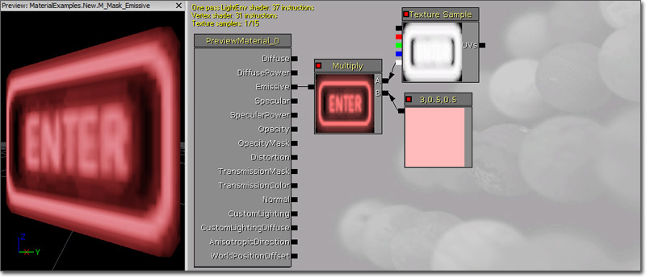
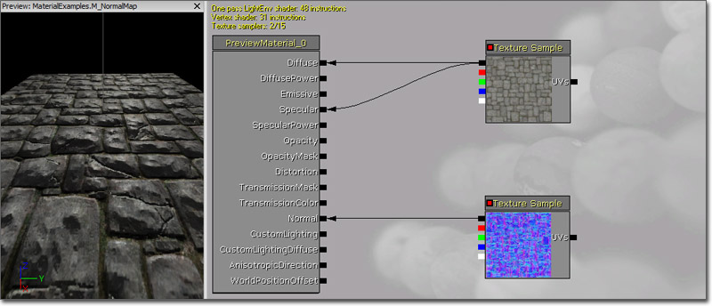

UDN
Search public documentation:
MaterialExamples
日本語訳
中国翻译
한국어
Interested in the Unreal Engine?
Visit the Unreal Technology site.
Looking for jobs and company info?
Check out the Epic games site.
Questions about support via UDN?
Contact the UDN Staff
中国翻译
한국어
Interested in the Unreal Engine?
Visit the Unreal Technology site.
Looking for jobs and company info?
Check out the Epic games site.
Questions about support via UDN?
Contact the UDN Staff
UE3 Home > Materials & Textures > Material Examples
Material Examples
Overview
Concepts and Techniques
Specularity
Specularity is the highlight created on a surface as a result of the light reflecting off it. In general, the shinier the surface the smaller and brighter the specular highlight will be. The Specular input channel on the material node is used to control the color and brightness of the specular highlight, while the SpecularPower input channel controls the falloff or tightness of the highlight.Environment Maps
Environment mapping, or reflection mapping, can easily be implemented to apply realtime reflections or to give objects the appearance of reflecting the environment through the use of pre-rendered cubemaps. A ReflectionVector expression passed through a Transform (Tangent -> World) is used as the UV texture coordinates for a TextureSample with the environment map assigned. This maps the cubemap (RenderToTextureCube or static cubemap) to the surface of the mesh, causing it to appear reflective. The RenderToTexture page has information regarding setting up a SceneCaptureCubeMapActor for realtime reflections as well as using a SceneCaptureCubeMapActor for Saving static captures. To create a new cubemap manually, right-click in the Content Browser, select New TextureCube from the context menu. Another option is to click the New button in the Content Browser and select the TextureCube option in the Factory combobox. Then import the six images of your environment and assign them the slots available in the Face Neg/Pos X/Y/Z properties of the new TextureCube. For each of the sides of the CubeTexture, they will be oriented all with the top of the image being the top most part of the texture, and the top and bottom sides will both share the same top direction as depicted in the below image: When assigning the textures into the TextureCube, place them in the following slots: Once the TextureCube is set up, assign it to a new TextureSample in the Material Editor. You can connect the RGB output of the TextureSample to the Diffuse input channel of the Material at this point, but you will get errors. To correct these errors you will need to add a new ReflectionVector expression and a new Transform expression. Connect the output of the ReflectionVector to the input of the Transform and then connect the output of the Transform to the UVs input of the TextureSample.Masks
A Mask is a grayscale texture, or a single channel (R, G, B, or A) of a texture, used to limit the area of an effect inside of a material. Quite often, a mask will be contained within a single channel of another texture, such as the alpha channel of the diffuse or normal map. This is a good way to make use of unused channels and keep the number of textures being sampled in the material to a minimum. Technically, any channel of any texture can be thought of and used as a mask. An example mask might look something like the image below: Typical ways to use texture masks include using a Multiply expression to multiply some value by the value of the mask, effectively telling the material to use the value only where the value in the mask is greater than 0.0. This will vary the intensity of the value of the effect based on the mask value. This technique is commonly used with materials that have glowing parts. An Emissive mask is created where the parts that glow are white (or varying shades of gray) while everything else is black. The benefit of this is that it not only allows you to limit where the glow is applied, but you have complete control over the color of the glow inside of the material allowing you to quickly make changes to the color instead of requiring a texture artist to make changes and re-import the texture.  Another common use of a mask is to blend between two effects by using the mask as the Alpha input of a LinearInterpolate expression. This will cause one effect or value to be used where the mask is white and another to be used where the mask is black, with a blending of the two in between.Bump Mapping
In Unreal Engine 3 there are two main techniques used to create Bump Map Materials. Briefly described they are:- Normal Mapping -- Uses XYZ vector information instead of just height info of simple bump maps.
- Offset Bump Mapping -- Virtual height displacement of bumps through modification of texture coordinates in addition to normal mapping.
Normal Mapping
A Normal Map Material uses XYZ information that is stored as RGB components of a texture that is then translated into the surface angle of the texture. This creates the illusion of depth as light reflects off it differently depending on the Normal direction. Creating a material that uses normal mapping is extremely simple in Unreal Engine 3. The first thing that is needed is a normal map Once you have your normal map imported and ready to use, it needs to be assigned to a TextureSample and then the RGB outputs of that is connected to the Normal input channel of the base Material node.  You can clearly see the lighting interacting with the normal mapped surface giving the appearance of having much more detail. The addition of the diffuse texture being connected to the Specular input channel helps illustrate this effect.Different settings for Normal Map textures
If you are encountering problems with your alpha channel being removed from your normal map or the normal map not giving off the full detail, you can edit the normal map. If you are going to use the offset shader and your height map is in the alpha channel of your normal map, you need to use a different texture compression than TC_NormalMap. Your normal map should be set to TC_NormalMapAlpha so it keeps the alpha channel. This way you can use the parallax bump mapping shader described above. If your normal map isn't reporting the lighting information it should be, you may need to change settings on the normal map itself. This is the result of just importing a common normal map texture without any other editing: Notice there is not much depth in the texture itself. When applied to a scene with a dynamic light, there are many errors across brush surfaces. After tweaking with the texture in the browser (double click the normal map texture in the Content Browser to bring up the settings window) you can achieve better results.
The settings used for a better normal map are listed here. The SRGB check box is not checked. The first 3 channels of UnpackMin set to -1. The LOD Group is - TEXTUREGROUP_WorldNormalMap.
These settings gave the normal map more depth. You will also notice a offset shader is being used. The compression settings on the normal map is set to TC_NormalMapAlpha. The height map is in the alpha channel of the normal map. This is the desired setting for it. Lowering the UnpackMin settings more can give you even more detailed information. If your normal map isn't showing the desired detail, you should try playing with this. However, there are chances of distortion.
Notice there is not much depth in the texture itself. When applied to a scene with a dynamic light, there are many errors across brush surfaces. After tweaking with the texture in the browser (double click the normal map texture in the Content Browser to bring up the settings window) you can achieve better results.
The settings used for a better normal map are listed here. The SRGB check box is not checked. The first 3 channels of UnpackMin set to -1. The LOD Group is - TEXTUREGROUP_WorldNormalMap.
These settings gave the normal map more depth. You will also notice a offset shader is being used. The compression settings on the normal map is set to TC_NormalMapAlpha. The height map is in the alpha channel of the normal map. This is the desired setting for it. Lowering the UnpackMin settings more can give you even more detailed information. If your normal map isn't showing the desired detail, you should try playing with this. However, there are chances of distortion.
Offset Bump Mapping
Offset Bump Mapping takes the illusion of depth available in normal maps a step further by appearing to displace the pixels from the surface by modifying the UV coordinates in a creative way. The above screenshot is of a completely flat plane, yet the bricks appear to rise up from the surface, even at this steep angle. To see the difference between normal maps and offset bump maps look below. Notice the edges of the bricks in the image on the right. The bricks on the left have bumpiness but are essentially flat whereas the bricks on the right appear to have actual height.Heightmap
In addition to the usual assortment of textures you might use in a material (Diffuse, Specular, Normal, etc.), when creating a material using offset bump mapping you will also need a heightmap. The heightmap is a grayscale texture where the shades of gray represent height. In the case of our tutorial, this information is in the alpha channel of a separate texture simply for visualization purposes. In many cases, the heightmap will be contained in the alpha channel of the normal map texture.Transmission
Transmission refers to the ability of a surface to pass light through from the opposite side. This effect is similar to what is known as sub-surface scattering (SSS), though it is nowhere near as complex as true SSS. There are two input channels that control the transmission of a material: TransmissionMask and TransmissionColor. The TransmissionMask input channel can be used by itself or in conjunction with the TransmissionColor, while the TransmissionColor input channel requires a value to be input to the TransmissionMask to function. When passing a value only to the TransmissionMask input channel, the value controls the color and intensity of the transmission. When used in conjunction with the TransmissionColor input channel, the TransmissionMask is multiplied by the TransmissionColor to calculate the total transmission. This means you can pass a color to the TransmissionColor in the form of a Constant3Vector and pass a Constant to the TransmissionMask to use to control the instensity of the transmission.Edge Lighting
Rim lighting, or edge lighting, is a technique commonly used in film or cinematics where lighting is used to light the silhouette of a character in order to set them apart from the scene or make them the focal point. While this can easily be achieved with normal lights, it requires extra setup and animation to have the lights follow the character. This same basic effect can be done within a material giving greater control over the effect and even using it for other purposes, such as giving a character an ethereal look or simply simulating actual lighting on an unlit surface to save on performance.Parameterization
Parameterization refers to the use of parameter expressions within a material. Parameters can be modified by instances of the material or through code. One of the main advantages of parameterization is that you can create a master material which contains all of the functionality you want a collection of materials to all contain. In this master material, certain aspects, such as TextureSamples and key Constants and Constant3Vectors can be replaced with TextureSampleParameter2D, ScalarParameter, and VectorParameter expressions. Then when instances of the master material are created, those aspects of the material can be modified to create completely different materials visually whithout having to waste time or resources creating a new material from scratch. See the InstancedMaterials and MaterialInstanceConstant pages for more information.Examples
Shiny
The examples in this section involve creating surfaces with different types of shininess through the use of Specularity and Environment Maps.Matte
This surface has a flat appearance, though still having some specular highlight. It can be useful for creating surfaces that do not have much or any gloss to them, such as some plastics and matte painted surfaces. The Diffuse color is a bright red Constant3Vector (1.0, 0.0, 0.0) in the example, but any color or a TextureSample could be used. The SpecularPower is driven by a Constant with a value of 5.0 causing the highlight to be very dispersed, while the Specular color is a Constant3Vector whose value is a faded version of the Diffuse (0.67, 0.22, 0.22), causes the highlight to be faint.Glossy
This surface has a very glossy appearance, with a tight and bright specular highlight. It can be useful for creating any sort of glossy surface, such as glass, polished plastic, car paint, etc. The Diffuse color is a bright red Constant3Vector (1.0, 0.0, 0.0) in the example, but any color or a TextureSample could be used as well. The SpecularPower is driven by a Constant with a value of 75.0 causing the highlight to be very focused, while the Specular color is a Constant3Vector whose value is an overdriven version of the Diffuse (3.0, 1.0, 1.0) causing the highlight to be bright and pronounced.Metallic
This surface has a satin appearance, with a fairly dark diffuse color and a dispersed yet fairly bright specular highlight. It can be useful for creating metallic surfaces or satin finishes such as silk fabric. The Diffuse color is a dark red Constant3Vector (0.2, 0.0, 0.0) in the example. Using a darker base color is essential to this effect, as the Specular color is essentially the real color of the surface. If using a TextureSample, you could easily multiply it by a Constant to darken it to achieve a similar effect. The SpecularPower is driven by a Constant with a value of 2.0 causing the highlight to be very dispersed, while the Specular color is a Constant3Vector whose value is a brighter version of the Diffuse (1.0, 0.0, 0.0) causing the highlight to be bright.Reflection
This material uses a cubemap reflection, or environment map, the give the appearance of a polished surface. It can be useful for creating glass, water, chrome, or any other reflective surface. The Diffuse color is controlled by the environment map, which uses a ReflectionVector passed through a Transform (Tangent -> World) for its UV texture coordinates. The environment map is multiplied by a Constant of 0.375 to tone down the reflectivity. The SpecularPower value of 2.0 causes the highlight to be very dispersed, while the Specular brightness of 0.125 causes the highlight to be faint. This gives a little contrast but keeps the highlight very dim and lets the reflection handle the rest.Bump Offset
To access the heightmap create a new Texture Sample with the texture containing the heightmap assigned to it. If using the alpha channel of the normal map, a duplicate of the TextureSample with the normal map assigned will be needed. Your material network should look something like the one below. Now add a BumpOffset expression in the workspace (holding B and left-clicking is a quick shortcut) and place it between the heightmap TextureSample and the other TextureSamples in the material. Connect the alpha channel output (bottom one) of the heightmap Texture Sample to the "Height" input of the BumpOffset. Selecting the BumpOffset expression will display its properties. These should be adjusted to get the desired look for the effect.- HeightRatio - Effectively the ratio between the virtual height of the bumps and the width of the texture. The default is .05, which means that if one tile of the material is mapped to a 10 ft square, the bump depth will appear to be about 10*.05=.5 ft. Find a value that looks right for your material.
- ReferencePlane - A number between 0 and 1 which represents the bump height which results in no texture coordinate offset. The default of .5 should work for most cases. Tweak it if desired.
Glow
This material uses the Emissive input channel to cause parts of the surface to glow, meaning it will appear fully lit even when no light is affecting it. This effect can be useful for creating lights (i.e., the physical mesh used as the visual representation of a light in the world), particle effects, and any other surface which should appear to give off light. When used in conjunction with Lightmass, the surface itself can actually be used as an area light using the Emissive input channel to give off light. (Click for full size) The Diffuse color of the material comes from the Alpha channel of the TextureSample. The R, G, and B channels of the TextureSample are all used as individual masks which are multiplied by red, green, and blue Constant3Vectors respectively. These are then passed through a series of If expressions which compare the output of a Sine expression to a couple of Constant values in order to alternate between the three colors. The output of the final If expression is connected to the Emissive input channel to produce the glowing letters.Transparency
These examples use the Opacity or OpacityMask input channels to create transparent materials.Masked Transparency
This material uses masked transparency, which means the surface is either completely opaque or completely transparent. This can be used to hide parts of a surface, resulting in the surface appearing more complex than the underlying geometry. For instance, tree or plant leaves and other foliage such as grass commonly use simple planes and use this technique to hide the parts of the mesh outside of the leaf's outline. The Diffuse color is driven by a diffuse texture. The Specular color is obtained from the green channel of the diffuse texture, while the intensity is amplified by multiplying it by a Constant of 4.0. The Diffuse texture contains the opacity mask in its alpha channel, which is connected to the OpacityMask input channel. Setting the Blend Mode to BLEND_Masked in the material's properties causes the OpacityMask to be used resulting in only the portion of the material where the opacity mask is white (or has a value greater than the Opacity Mask Clip Value to be exact) being visible. A Normal Map is connected to the Normal input channel to increase the detail of the lighting. The SoftMasked blend mode results in an effect very similar to this and the setup would be identical.Translucency
This material uses translucency to create surfaces that are not completely transparent or opaque, but with varying degrees of transparency. (Click for full size)Depth-Based Transparency
This material demonstrates the use of a depth calculation to vary the transparency of the surface based on how far the surface is from the surface behind it. This is similar to the behavior provided by the DepthBiasAlpha expression only it is completely adjustable. This can be extremely useful when creating water materials as it simulate the natural appearance of water as it nears the shore. (Click for full size) The Diffuse color is driven by an Environment Map that has its contrast decreased and is darkened a great deal. The Opacity is controlled solely by the custom depth calculation. The depth of the current pixel, represented by a PixelDepth expression, is subtracted from the depth of the pixel behind it, represented by a DestDepth expression. The resulting value is then divided by a reference depth specified by a Constant value of 192.0. This value represents the depth difference at which the surface will become completely opaque. The result is then clamped to the desired range. For this example, the range was left at the default of [0, 1], but other values can be used if you want the surface to never be fully opaque or fully transparent. The Normals of the surface are the result of a fairly complex network of panning normal maps to give the appearance of ripples.Refraction
This materials uses transparency and the Distortion input channel to simulate the refraction of light as it passes through the surface. This effect is useful when creating glass or water surfaces as well as particle effects like steam or heat waves. (Click for full size) The Diffuse color is driven by an Environment Map multiplied by a Fresnel expression with an Exponent of 0.5 to cause the reflection to gradually become more apparent as the surface faces farther away from the camera. The SpecularPower is driven by a Constant with a value of 150.0 causing the highlight to be very focused, while the Specular color is a Constant whose value is 1.0 causing the highlight to be fairly bright. The Opacity is controlled by the same Fresnel expression which is multiplied by a Constant of 0.75. The Distortion input channel value is calculated by multiplying a Constant3Vector with a value of (5.0, 5.0, 0.0) by a Fresnel with an Exponent of 1.0.Sub-Surface Scattering
This material uses the Transmission input channels to simulate a sub-surface scattering effect. This technique is useful when creating skin, wax, or other types of materials that are not transparent, but that light from the opposite side can show through. The Diffuse color is being driven by a Constant3Vector, though a TextureSample could be used depending on the material being created. The SpecularPower is driven by a Constant with a value of 25.0 causing the highlight to be fairly focused, while the Specular color is a Constant whose value is 0.5 causing the highlight to be fairly faint. The TransmissionMask in the example has a Constant3Vector with a darkened version of the Diffuse color. This could also be a TextureSample as in the Diffuse color.Detail
This material combines multiple diffuse and normal maps, one to show larger details at a distance and one to show small details close up. This is commonly used on stone, rock, or concrete materials. A single TextureCoordinate expression is multiplied by two Constants, one witha value of 0.5 and the other 4.0, to be connected to the UVs inputs of the diffuse and normal maps. The TextureCoordinate multiplied by a value of 0.5 is connected to the UVs input of the diffuse and normal map TextureSamples that will be for the larger, distant details. The TextureCoordinate multiplied by 4.0 is connected to the UVs input of the diffuse and normal map TextureSamples that are used for the small, close up details. The two diffuse TextureSamples are combined using an Add expression and then connected to the Diffuse input channel. The two normal map TextureSamples are combined using another Add expression and connected to the Normal input channel. The example is for a concrete material so the specular highlight is faint and fairly dispersed.Animating UV Coordinates
These examples demonstrate various methods of animating the UV coordinates of textures through the use of Panner and Rotator expressions.Rotating
(Hover for animated preview)
Panning and Distortion
(Hover for animated preview)|
|
|